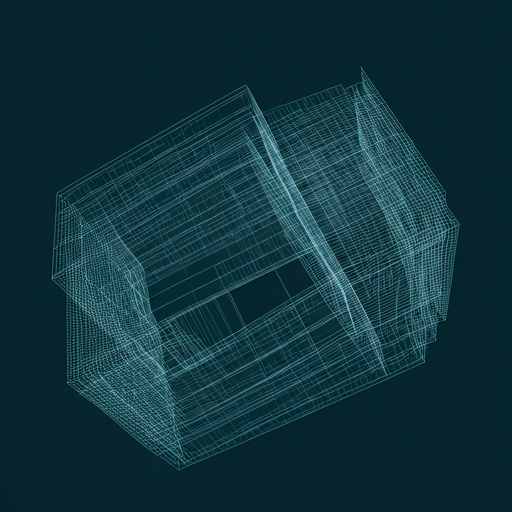

Architectual Integrity
Building service models that are as robust as they are beautiful. We prioritize structural excellence over superficial speed.
We don't just provide solutions; we architect experiences. Our methodical approach ensures every detail of your service requirements is curated with surgical precision.
Our framework rejects the generic. We treat every client engagement as a bespoke editorial project, where quality is the only non-negotiable metric.
01Building service models that are as robust as they are beautiful. We prioritize structural excellence over superficial speed.
Only the top 1% of service providers meet our curation criteria. Rigor is our baseline.
Tailored service layers designed specifically for high-net-worth institutional requirements.

Where professional ethics meet modern innovation.

We manage the complexity of multi-vendor environments so you can focus on the vision. Our concierge layer acts as a single point of elite accountability.